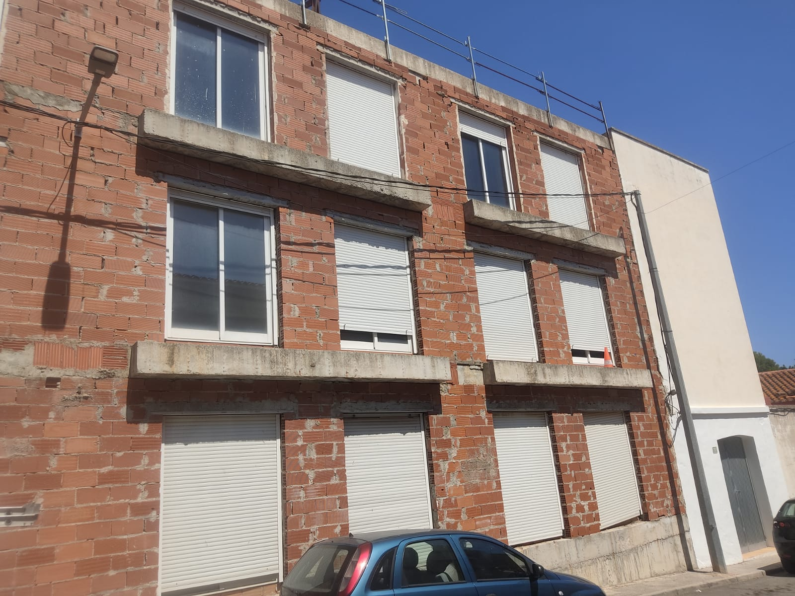
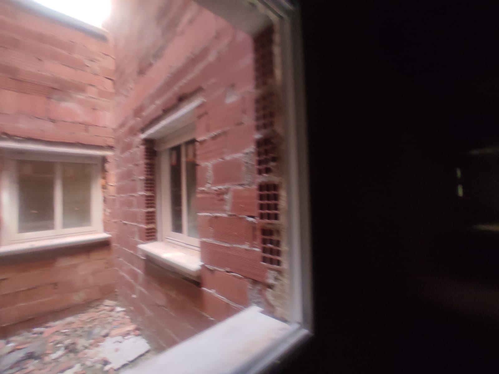
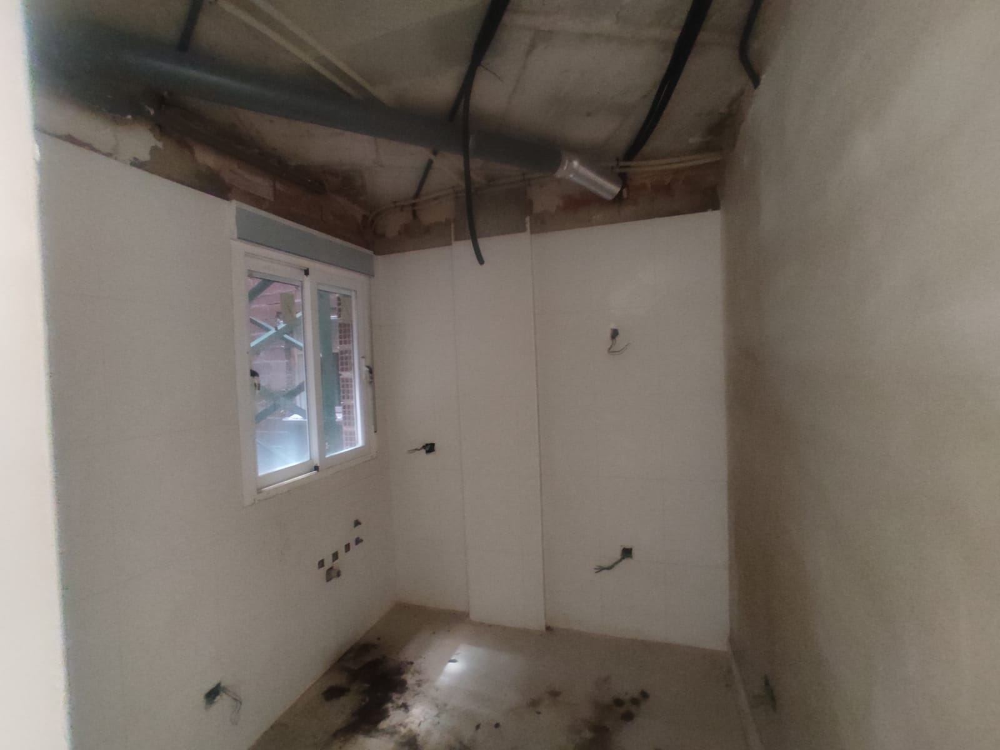
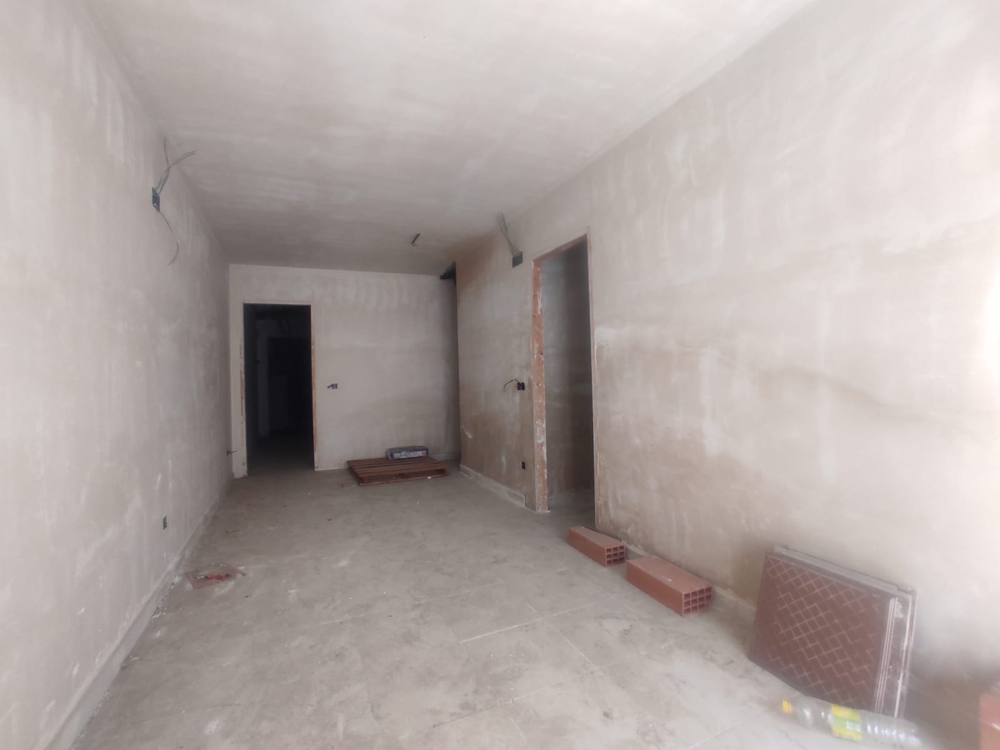
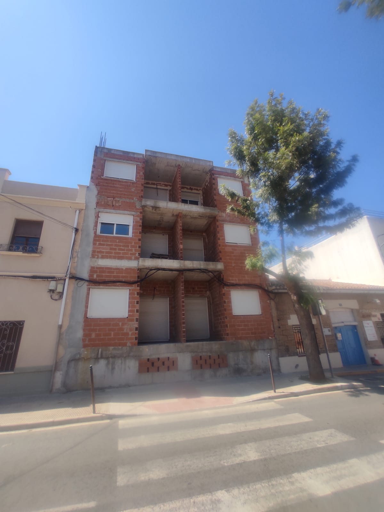
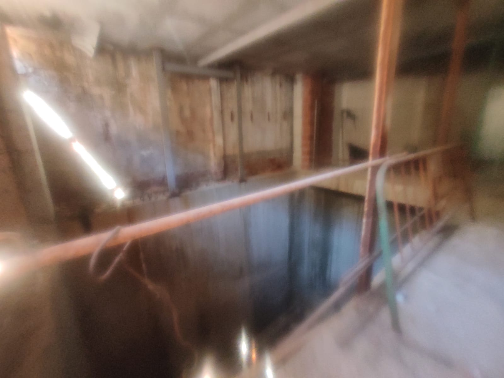

Edificio de 20 viviendas y 20 plazas de garaje. Estructura y cerramiento ejecutados, obra parada ~18-20 años. Promotor original quebrado (Vallelitoral, extinguido 2022). Licencia 2068/2023 concedida dic. 2023: autoriza legalización y terminación de la obra.

Datos verificados en documentación disponible. DATO = verificado · PENDIENTE = a solicitar.
VALLELITORAL ESP SL (promotora original, B-53972212) obtuvo la Licencia de Obras Mayor LOM 24/2006 (fuente a verificar) y ejecutó la estructura hasta el cerramiento. Con la crisis de 2007-2008 dejó de operar; concurso de acreedores en 2009, liquidación en 2010, extinción definitiva por insuficiencia de masa el 28/03/2022 (BORME). El edificio quedó parado en bruto.
En 2023, un nuevo promotor (Campos Inmobiliaria SL / rep. Gabriel Marroig Ibarra, arquitecto Marina Alta) obtuvo la Resolución de Alcaldía 2023-0622 (exp. 2068/2023, concedida 20/12/2023): licencia de legalización y proyecto básico y de ejecución del edificio de 20 viviendas y garaje. La licencia autoriza tanto la legalización de lo ya construido como la terminación de la obra.
Clic en cualquier foto para ampliar. 7 fotos disponibles, todas del estado real del inmueble.






Tipologías confirmadas en planos y documentación de proyecto. Baños y m² útiles pendientes de extracción del cuadro de superficies.
| ID | Planta | Tipología | Dorm. | Baños | m² útil | Garaje |
|---|---|---|---|---|---|---|
| PB-01 | Planta baja | Apt. 2 dorm. | 2 | pendiente | pendiente | 1 plaza |
| PB-02 | Planta baja | Apt. 2 dorm. | 2 | pendiente | pendiente | 1 plaza |
| PB-03 | Planta baja | Apt. 2 dorm. | 2 | pendiente | pendiente | 1 plaza |
| PB-04 | Planta baja | Apt. 2 dorm. | 2 | pendiente | pendiente | 1 plaza |
| PB-05 | Planta baja | Apt. 1 dorm. | 1 | pendiente | pendiente | 1 plaza |
| PB-06 | Planta baja | Apt. 1 dorm. | 1 | pendiente | pendiente | 1 plaza |
| P1-01 | Planta 1ª | Apt. 2 dorm. | 2 | pendiente | pendiente | 1 plaza |
| P1-02 | Planta 1ª | Apt. 2 dorm. | 2 | pendiente | pendiente | 1 plaza |
| P1-03 | Planta 1ª | Apt. 2 dorm. | 2 | pendiente | pendiente | 1 plaza |
| P1-04 | Planta 1ª | Apt. 2 dorm. | 2 | pendiente | pendiente | 1 plaza |
| P1-05 | Planta 1ª | Apt. 2 dorm. | 2 | pendiente | pendiente | 1 plaza |
| P1-06 | Planta 1ª | Apt. 2 dorm. | 2 | pendiente | pendiente | 1 plaza |
| P1-07 | Planta 1ª | Apt. 2 dorm. | 2 | pendiente | pendiente | 1 plaza |
| P2-BC-01 | P2 + Bajocubierta | Ático dúplex 4 dorm. | 4 | pendiente | pendiente | 1 plaza |
| P2-BC-02 | P2 + Bajocubierta | Ático dúplex 4 dorm. | 4 | pendiente | pendiente | 1 plaza |
| P2-BC-03 | P2 + Bajocubierta | Ático dúplex 4 dorm. | 4 | pendiente | pendiente | 1 plaza |
| P2-BC-04 | P2 + Bajocubierta | Ático dúplex 3 dorm. | 3 | pendiente | pendiente | 1 plaza |
| P2-BC-05 | P2 + Bajocubierta | Ático dúplex 3 dorm. | 3 | pendiente | pendiente | 1 plaza |
| P2-BC-06 | P2 + Bajocubierta | Ático dúplex 3 dorm. | 3 | pendiente | pendiente | 1 plaza |
| P2-BC-07 | P2 + Bajocubierta | Ático dúplex 3 dorm. | 3 | pendiente | pendiente | 1 plaza |
| TOTALES | 1 dorm: 2 · 2 dorm: 11 · Ático 3D: 4 · Ático 4D: 3 | — | pendiente | ~1.750 m² (est.) | 20 plazas | |
Titular incierto, cargas desconocidas, obra nueva sin declarar. Esta área bloquea la operación antes de gastar un euro en técnicos.
El riesgo nº1 de la operación: el encaje del edificio en el plan urbanístico vigente (PGE+POP 2023). Si no encaja, la operación no sigue. La buena noticia: la licencia 2068/2023 autoriza terminar la obra.
El edificio está ejecutado al ~55-65% (estructura y envolvente hechos). Los riesgos son cuantificables, no descartables a priori — el método IN dice: inspecciona, cuantifica, y condiciona el GO.
Recorrido económico: IM·PULSO aporta los precios de venta → con eso se montan las partidas y el gasto estimado. Pendiente afinar con presupuestos reales, fiscalidad y estudio de mercado.
Datos objetivos del micromercado obtenidos de RealState.com + Idealista + catastro. Fuente: análisis propio (06-excels.md). Distintos y complementarios al estudio IM·PULSO (precios de venta, pendiente).
| Dato | Valor | Fuente |
|---|---|---|
| PEM total (Presupuesto de Ejecución Material, ene. 2006) | 714.288 € | Memoria Proyecto de Ejecución · Benito Martín Diego / BMD Arquitectos · Vallelitoral ESP SL |
| — Cap. II: Cimentación + estructura (mayor partida) | 224.767 € (31,5% PEM) | Presupuesto capítulos |
| — Cap. IV: Albañilería | 115.783 € | |
| — Cap. V: Solados + alicatados | 112.627 € | |
| Parcela | 506,87 m² | Memoria proyecto · catastro: ~517 m² |
| Viviendas — superficie estimada | ≈ 1.750 m² | Estimación proyecto · superficies por unidad pendientes |
| Garaje (sótanos S-1 + S-2) | 622,24 m² | Memoria proyecto |
| Total construido | ≈ 2.374 m² | Viviendas + garaje |
| Altura línea de cornisa | 9,50 m (máx. 10 m) | Normativa NNSS 1987 · aplicable al proyecto 2006 |
| Cimentación: tensión admisible terreno | 2 kp/cm² | Zapatas aisladas · calizas 0,60-0,90 m |
Cada partida debe tener oferta o estimación propia antes de la oferta vinculante. La tabla refleja el coste de terminar el edificio desde su estado actual.
| Partida | Acción · Dónde / Quién | Precio aprox. |
|---|---|---|
| Obra general — terminación interior (3 constructoras) | Mín. 3 constructoras · Por capítulos · Precio fijo (no por administración) · Condición de GO método IN M6A | A presupuestar |
| Ascensor | Instalador especializado · Obligatorio >6 viviendas (Decreto 65/2019 GVA) · Aparte de constructora | 25.000-50.000 € |
| Parkings + montacoches (sistema de acceso garaje) | Oferta específica · Confirmar montacoches vs rampa in situ (Memoria PE p.28) · Aparte de constructora | A medir y cotizar |
| Escaleras + zonas comunes | Constructora o partida separada · Incluir DB-SI (garaje >500 m²: BIE + detección CO + ventilación) | A medir |
| Instalación eléctrica — cuadro general + acometida | Instalador eléctrico + consulta compañía eléctrica · REBT 2002 (la instalación original es REBT 1973) | A medir |
| Fachada exterior + patio de luz | Constructora · Fachada ~65 €/m² (dato API sin validar) · Patio luz ~18 €/m² | A medir (ref. API) |
| Impermeabilización sótano + humedades | Empresas especializadas · Solo tras diagnóstico técnico (inspección patologías + piezométrico) | A determinar tras inspección |
| Honorarios arquitecto propio (Dir. obra + CFO + 1ª ocupación) | Arquitecto propio a contratar · Independiente del Ayuntamiento · Dirección obra + Certificado Final Obra + Licencia 1ª ocupación | A cotizar (partida presupuestable) |
| OCT (Organismo de Control Técnico) + Seguro decenal INEVITABLES | Bureau Veritas / Gloval / OCA Global + MUSAAT · La vía antigüedad (art. 28.4 TRLSRU) NO aplica en obra inacabada | OCT 15-30k + decenal 7,5-22,5k = 32-80k |
| Honorarios técnicos (proyecto fin de obra + ESS + ICT/telecom) | Arquitecto + aparejador + ing. telecom | ~5-7% sobre obra (~50-70k) |
| Permisos / licencias / ICIO | Ayuntamiento Beniarbeig (Quike) · Confirmar base imponible | ~3-4% PEM |
| Impuestos de compra | Confirmar con fiscal: IVA 21% (recuperable) + AJD 1,5%, o ITP 10% si vendedor no transmite como empresario activo | ~12k (vía IVA) vs. 75-90k (vía ITP) |
| Comercialización | Estimar sobre precio de venta real (no sobre precios API) | ~5% ventas |
| Impuestos sobre beneficio | Confirmar con fiscal: IS (25%) o IRPF según estructura JV | Variable — pendiente fiscal |
| TOTAL APROXIMADO (orientativo) — pendiente de afinar con presupuestos reales, fiscalidad e IM·PULSO | ~1,9-2,3M € (estimación abierta) | |
Solo las acciones que realmente hay que hacer, en el momento correcto. Las de verde son casi gratuitas y deciden el GO/NO-GO antes de gastar un euro más.
Nota simple: registradores.org · Registro de Pedreguer · 9,02 € + IVA · menos de 2 horas. IBI: Recaudación Municipal Beniarbeig o Diputación Alicante, gratuito. Revelan el titular real, las cargas y el riesgo de deuda tributaria encubierta. Sin ellas no hay operación.
Documento del Ayuntamiento que certifica el aprovechamiento y condiciones urbanísticas de la parcela; confirma si el edificio está conforme con el plan vigente o fuera de ordenación (confirmar con Quike, técnico de Urbanismo). No llamarla "certificado de compatibilidad urbanística". Ayuntamiento de Beniarbeig, plazo ~1 mes. Confirma si el edificio de 3 plantas está conforme o fuera de ordenación bajo el PGE+POP 2023. Si está fuera de ordenación: sin hipoteca bancaria posible, OCT no emite D6, operación cerrada. Si está conforme: GO urbanístico. Es el primer filtro.
Solicitarlo en el Ayuntamiento de Beniarbeig (Técnico Quike) o al vendedor (Campos Inmobiliaria SL tiene el original). Confirmar: ¿está viva o hay expediente de caducidad incoado?, ¿qué condicionantes impone?, ¿las condiciones suspensivas (ESS + telecomunicaciones) son activables? La licencia autoriza terminar — ese ahorro (5-15k y 6-12 meses) se confirma con el texto oficial.
Quike: técnico de Urbanismo del Ayuntamiento de Beniarbeig · urbanisme@beniarbeig.org · 965 766 018 · martes 11:00-13:30. Enviar UN correo con las consultas agrupadas por Área (urbanística, técnica, licencia). Las preguntas viven en el correo, no en el cuerpo del dossier. Correo en preparación — pendiente revisión de Xavi y Rus antes de enviar.
Realizar el MTVV COMPLETO según el Programa IN: estudio de micromercado, testigos, hipótesis y validación de precio. Localidades del entorno real: Dénia, El Verger, Els Poblets, Ondara… (Pedreguer es solo el Registro, no zona de mercado). El anuncio en Idealista es el paso 4 del método (Efecto Champagne / validación de precio). Sin precio de mercado propio, los números del API no tienen referencia.
Acceder al sótano antes de ofertar para ver in situ si hay agua estancada en el suelo. No es un ensayo técnico — es observación directa. Sin coste; condiciona si la inspección técnica de patologías es urgente o puede esperar.
Verificar alta censal del vendedor (036/037 de Campos Inmobiliaria SL). Si transmite como empresario: IVA 21% (recuperable) + AJD 1,5% = ~12k neto. Si no: ITP 10% = 75-90k. Gestión con abogado o gestor. Coste: una llamada.
El arquitecto o técnico propio que llevará la obra está por decidir. Contratar un arquitecto propio (independiente del Ayuntamiento y del promotor anterior) para: (1) visitar el edificio y validar el estado constructivo real, (2) asumir la dirección de obra de la terminación, (3) emitir el certificado final de obra (CFO), (4) gestionar la licencia de primera ocupación. Este paso es previo a los presupuestos de constructoras y condición necesaria para poder escriturar y vender.
Técnico geotécnico o aparejador · 1.500-3.000 €. Si el agua es freático alto sin solución viable → NO GO (descarte Grado IN nº3). Este dato condiciona el precio de compra más que cualquier factor técnico. Hacerlo antes de la oferta vinculante para fijar el coste real.
Requiere acceso al edificio y al proyecto. Por capítulos, precio fijo (no por administración). Mínimo 3 constructoras. Condición de GO método IN M6A. Sin esta cifra no se puede fijar precio de compra con precisión. Hacerlo antes de la oferta vinculante.
Fenolftaleína, esclerometría, pachómetro · 800-1.500 €. Si hay corrosión avanzada → NO GO o recálculo de coste de terminación. Descarte Grado IN nº1. Solo tiene sentido si el sótano no descarta y la Cédula confirma el encaje urbanístico.
Arquitecto con experiencia en rehabilitación (encaje CTE: 1-3k). Pre-consulta gratuita a Bureau Veritas, Gloval, OCA Global y MUSAAT (bloquea la escritura de obra nueva sin decenal). Hacer TRAS confirmar viabilidad urbanística con la Cédula.
El levantamiento (3.000-6.000 €) es obligatorio para la declaración de obra nueva (art. 199 LH) y la División Horizontal, pero eso ocurre DESPUÉS de comprar, no antes. El arquitecto propio confirmará si es necesario un levantamiento formal o basta con los planos del proyecto existente.
Notaría + Registro + sincronización catastral. La DON inscribe el edificio; la DH constituye cada vivienda como finca registral independiente. Necesita levantamiento as-built, OCT favorable y seguro decenal contratado. Coste: DON + DH + AJD (Actos Jurídicos Documentados) — variable según PEM real.
Información aportada por terceros, sin validar por nosotros. Se registra aquí para no mezclarla con el análisis propio — puede ser útil o puede estar desactualizada.
Coste total estimado por el API:
| Concepto | Detalle | Importe |
|---|---|---|
| Compra | Precio negociado | 750.000 € |
| Reforma — apartamentos | 33.355 € × 13 uds. (SIN medidas reales) | 433.617 € |
| Reforma — áticos | ~80.000 € × 7 uds. (SIN medidas reales) | 560.000 € |
| Extras no incluidos en reforma | Fachada (65 €/m²), patio luz (18 €/m²), acometida eléctrica, andamios… | No cuantificados |
| Total aproximado (según API) | ≈ 2.100.000 € | |
Ventas estimadas por el API:
| Tipología | Uds. | Precio/ud. | Total |
|---|---|---|---|
| Apartamentos | 13 | 135.000 € | 1.755.000 € |
| Áticos | 7 | 165.000 € | 1.155.000 € |
| Total ventas brutas | 2.910.000 € | ||
| Punto | Qué dijo Quike (verbal, sin validar) |
|---|---|
| Estado del edificio | Al edificio le falta terminar |
| Licencia | Estaría activa en principio |
| Ejecución de obra | No vería problema para ejecutar |
| Anomalías | No conoce anomalías |
Quike es el técnico del Ayuntamiento, NO un arquitecto contratado por nosotros. No ha visitado el edificio — fue Rus quien fue a su oficina. Esta información es positiva pero debe confirmarse por escrito. No sustituye los ensayos de carbonatación/corrosión ni la consulta al Registro para verificar expedientes de disciplina urbanística.
| Elemento | Contenido |
|---|---|
| Objeto literal | "Legalización y proyecto básico y de ejecución edificio de 20 viviendas y garaje" |
| Parte dispositiva | "RESUELVO: conceder licencia urbanística al solicitante para la ejecución del acto descrito" |
| Plazo de iniciación | 6 meses desde notificación (21/12/2023 → vence ~06/2024) |
| Plazo de ejecución | 15 meses (~09/2025). A jun-2026 ambos plazos vencidos — verificar si hay expediente de caducidad incoado |
| Paralización máxima | 6 meses |
| Condición suspensiva 1 | Estudio de Seguridad y Salud (ESS) — presentar antes de iniciar obras |
| Condición suspensiva 2 | Proyecto de Telecomunicaciones (ICT) — presentar antes de iniciar obras |
| Informe técnico (Arq. Mpal. Francisco Forgu · 26/09/2023) | Concluye cumplimiento del planeamiento vigente en parcela, edificabilidad, ocupación, alturas y aparcamientos. "PROCEDE conceder la licencia solicitada." |